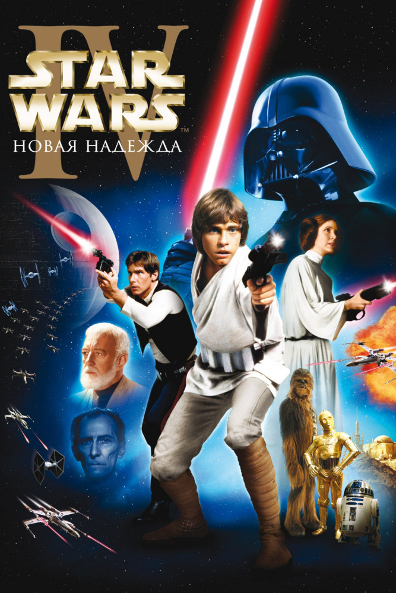

Эпизод IV: Новая надежда
Сюжет
Татуин. Планета-пустыня. Уже постаревший рыцарь Джедай Оби Ван Кеноби спасает молодого Люка Скайуокера, когда тот пытается отыскать пропавшего дроида. С этого момента Люк осознает свое истинное назначение: он один из рыцарей Джедай. В то время как гражданская война охватила галактику, а войска повстанцев ведут бои против сил злого Императора, к Люку и Оби Вану присоединяется отчаянный пилот-наемник Хан Соло, и в сопровождении двух дроидов, R2D2 и C-3PO, этот необычный отряд отправляется на поиски предводителя повстанцев — принцессы Леи. Героям предстоит отчаянная схватка с устрашающим Дартом Вейдером — правой рукой Императора и его секретным оружием — «Звездой Смерти».